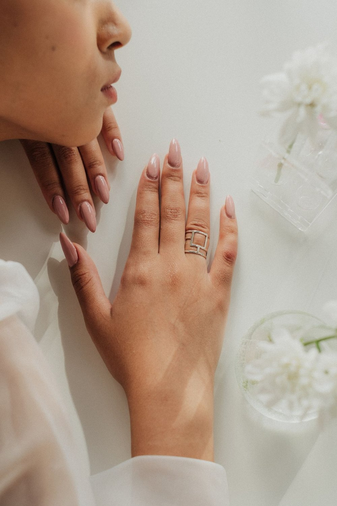
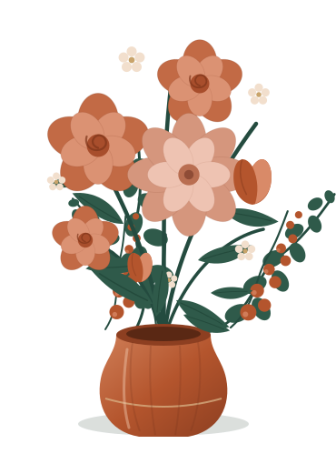
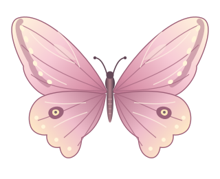
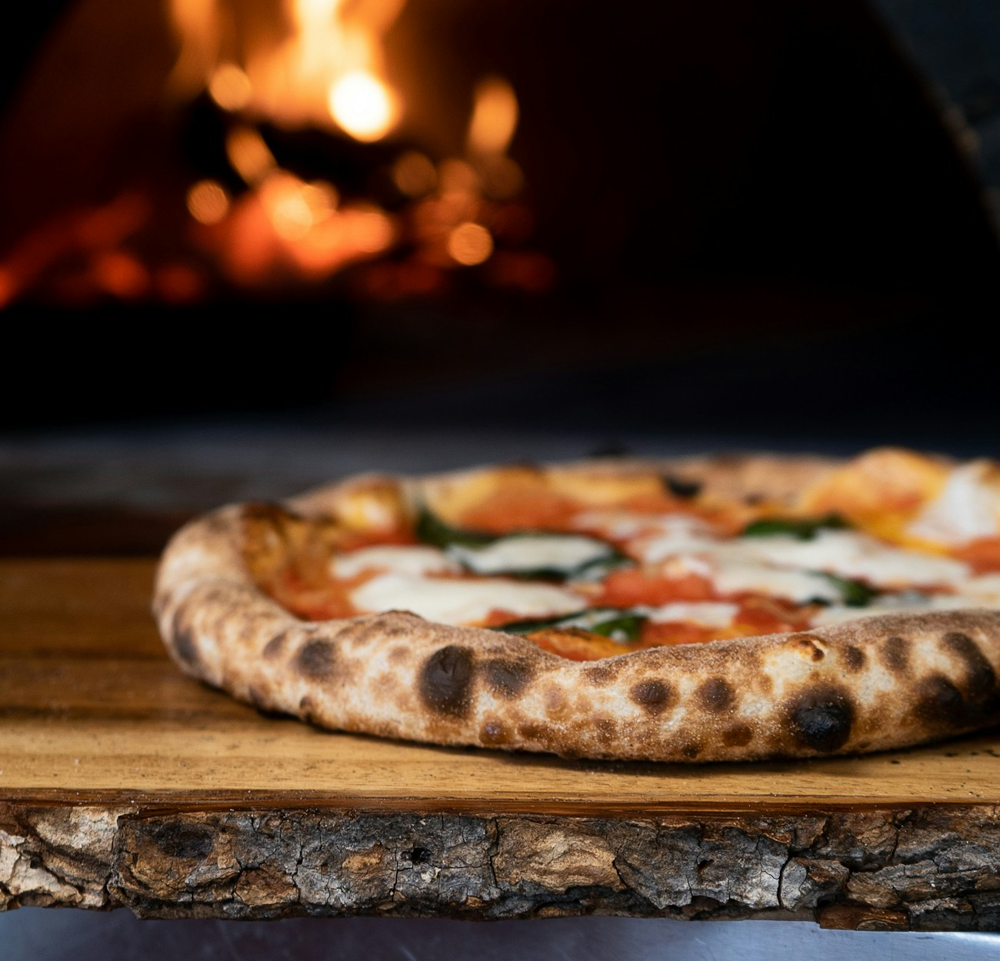
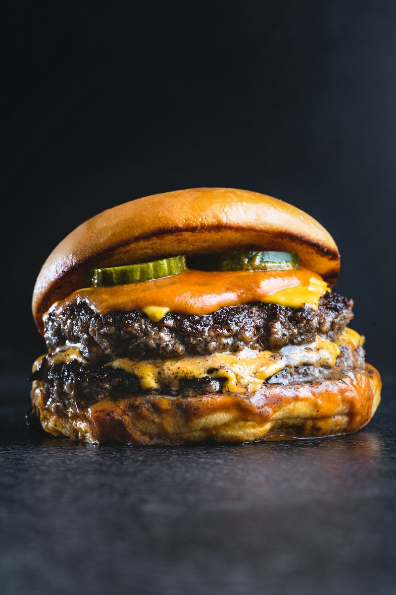
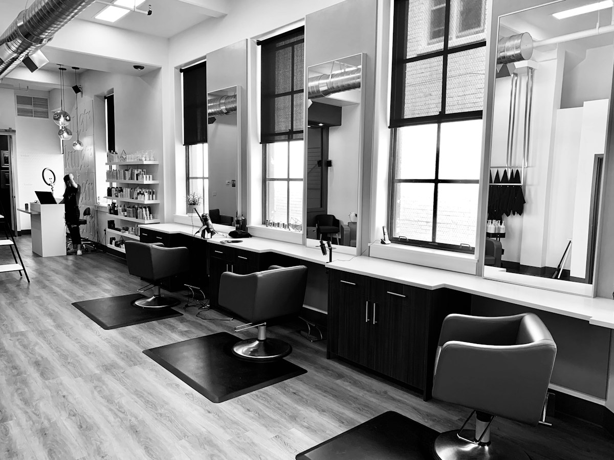

ÉlanNAIL ATELIERO atelier Serviços Agendar ↗
UM TEMPO SÓ SEUBeleza que
Beleza que
se sente na
ponta dos dedos.
01
SOFIA TRESSE · PORTFÓLIO
Transformo ideias em experiências digitais bonitas, intuitivas e cheias de personalidade.
Um momento só seu.
Um cuidado em cada detalhe.



01 / MEU TRABALHO NA WEB
Estes são os sites que desenvolvi.
Escolha um projeto e explore meu trabalho.


Studio Lumière

Todos os sites desta seleção foram criados por mim. Clique em “Acessar projeto” para visitar cada um.
02 / QUEM ESTÁ POR TRÁS
Sou Sofia Tresse. Gosto de transformar ideias em sites que combinam beleza, personalidade e uma navegação que faz sentido.
Meu olhar está nos detalhes: nas cores que acolhem, nas palavras que conectam e na experiência de quem chega. Por aqui, cada projeto é uma nova possibilidade de criar algo especial.
Quero tirar minha ideia do papel03 / O PRÓXIMO PROJETO PODE SER O SEU
Me conte o que você imagina para o seu site.
Nossa conversa começa com um oi no WhatsApp.